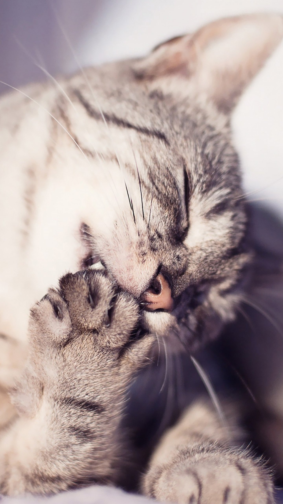

Give me Snack peasants.
check my latest jam with Furr-iends
here
or you can just copy-paste this https://www.youtube.com/watch?v=5sNuDu4dE8Y
don't forget to LoveVote me so we can take down the woof-gram